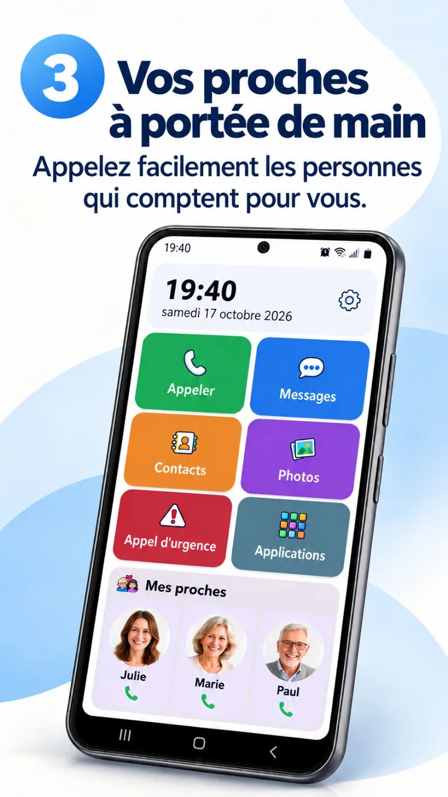
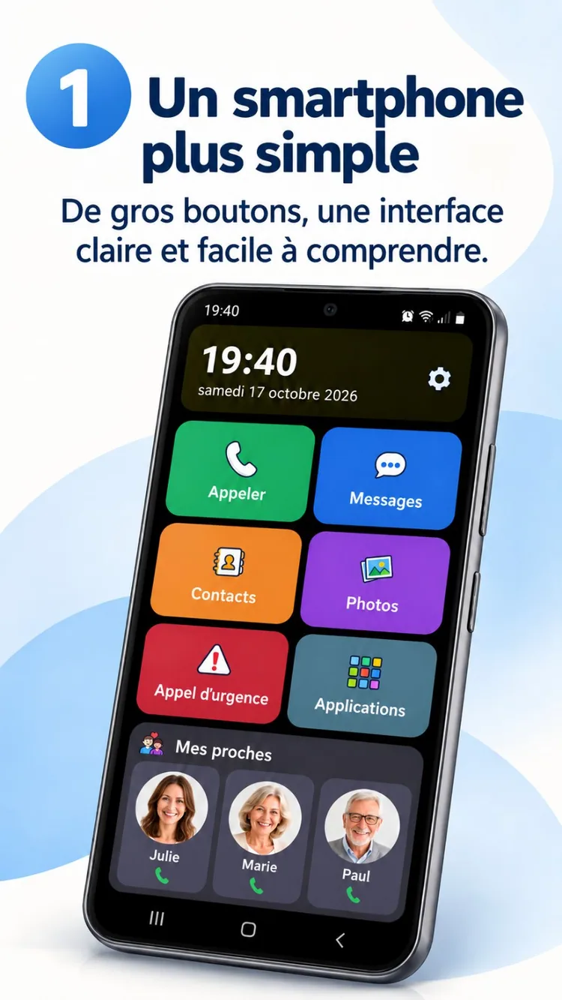

01
Une photo. Un appel.
Les personnes importantes à portée de main.


Un accueil Android facile à utiliser, des proches toujours à portée de main et la liberté de profiter de ce qui compte vraiment.
ClikoSpido transforme l’accueil d’un smartphone Android compatible en un espace clair, familier et personnalisable. Moins d’hésitation au quotidien, davantage d’autonomie.
De grandes commandes, des actions utiles et une interface qui laisse respirer l’essentiel.

Appels, messages, contacts, photos, caméra et raccourci d’urgence : retrouvez rapidement vos principales actions.
Visuel promotionnel illustratif : certaines interfaces peuvent différer de la version installée.
Les personnes importantes à portée de main.

Un grand clavier et des commandes lisibles.
Photos des proches et recherche alphabétique.
Un proche peut personnaliser l’affichage, sélectionner les applications autorisées et protéger certains réglages par un code PIN.
Explorez les huit visuels promotionnels de l’application dans votre langue.

Découvrez ClikoSpido dans une courte vidéo de présentation, avec les textes adaptés à votre langue.
Lancer la vidéoDes réponses claires avant de commencer.
Oui, sur les smartphones Android compatibles. Vous pouvez le sélectionner comme écran d’accueil par défaut.
Non. ClikoSpido permet de simplifier un smartphone Android compatible que vous possédez déjà.
Non. Le bouton Messages ouvre votre application de messagerie habituelle, qui continue à gérer SMS, MMS et RCS.
Non. Le raccourci peut appeler un proche configuré ; il ne remplace pas les secours officiels ni un service de télésurveillance.
Une interface conçue pour rendre les gestes quotidiens plus simples.
Revenir à l’accueil